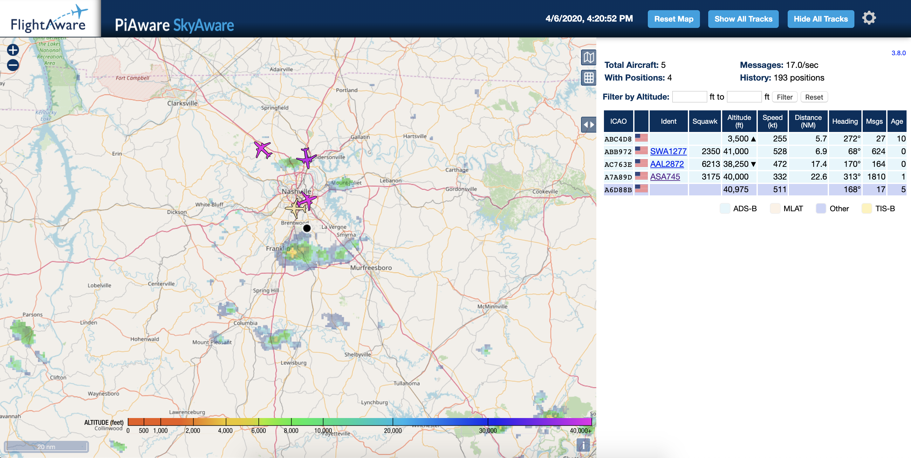

Build your own Ground Station with PiAware
If you are an Aviation enthusiast, have I got the project for you!
Surely you can't be serious…
Livin’ the dream
Hey Capt. Brickheart, YOU’RE ON GUAAARRRD!
Over the past few days I had been working on migrating a few services within my “Ham Shack” to containerized services, which freeded up both space on my desk as well as a few Raspberry Pi's, which was exactly what I needed to build a new PiAware ADS-B ground station!
If you like data, enjoy watching airplanes fly overhead, and want to contribute to a rapidly growing network of ADS-B ground stations - then this is the project for you (plus it’s really easy and straightforward).
The minimum bill of materials for this project are:
- Raspberry Pi (including power supply, micro sd card, etc to make RasPi work…)
- FlightAware Pro ADS-B Receiver
- MCX antenna plug with SMA adapter
There are several kits available out there, or you can piecemeal one together using the components of your choosing.
Pretty straight forward stuff, so off to the workbench we go…
Setup/Install/Build
To start, I'd advise following these instructions, and stopping after you have the Pi booted up with the receiver plugged into a USB socket.
Once the Pi is booted up, it's time to knock-out the installation stuff:
# Download/Install PiAware
$ wget https://flightaware.com/adsb/piaware/files/packages/pool/piaware/p/piaware-support/piaware-repository_3.8.1_all.deb
$ sudo dpkg -i piaware-repository_3.8.1_all.deb
$ sudo apt-get update
$ sudo apt-get install piaware
$ sudo piaware-config allow-auto-updates yes
$ sudo piaware-config allow-manual-updates yes
# Download/Install dump1090
$ sudo apt-get install dump1090-fa
# Download/Install dump978
$ sudo apt-get install dump978-fa
# Reboot System
$ sudo reboot
That's all there is to it! Pretty simple project indeed… Next up will be usage and some housekeeping tasks.
Usage & Housekeeping
Before proceeding too much further, it's important to follow the last bit of housekeeping tasks of claiming our client device through FlightAware. The process takes roughly 10 minutes, and then once your account and ground station are synced, you should begin to see meaningful data.
Now that you're up and running, you can see your ground station locally on your network by visiting the address in your web browser, for example: 10.0.0.107:8080

Depending on your location, you may see a little or a lot of traffic…this was from a recent trip using a handheld version of the ground station and I was able to get pretty good results!
Expansion
You now have a ground station up and running! So what's next? Well that's entirely up to you, and how far you'd like to push the range of being able to intercept the messages from aircraft.
The best recommendations I could give for expansion in general would be two things:
- Adding a Signal Line Dampener
- Build a bigger Antenna
While the first item is something you'd need to acquire, the latter could actually be made with very basic materials - on the contrary you could also just stick with what you have and try to get it as high in elevation as possible, without a bunch of stuff in the way to get a clearer signal from aircraft transponders.
…and don't call me Shirley.